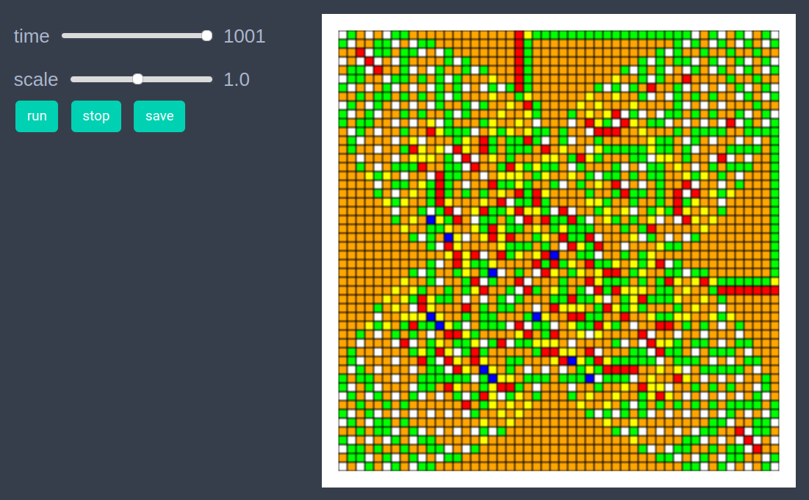
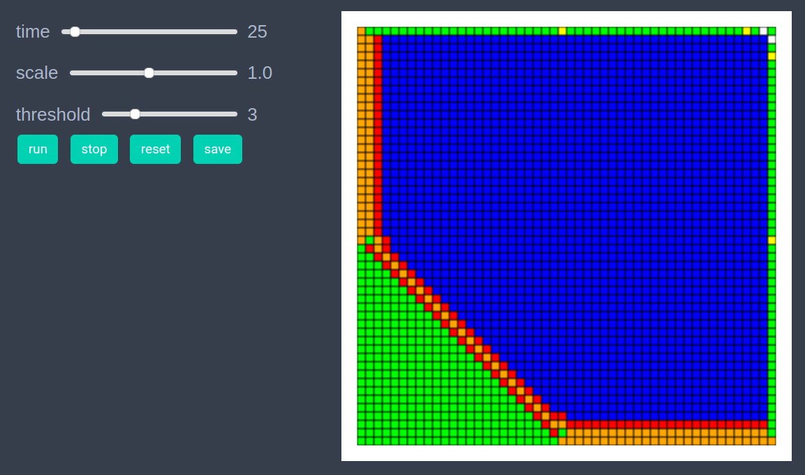
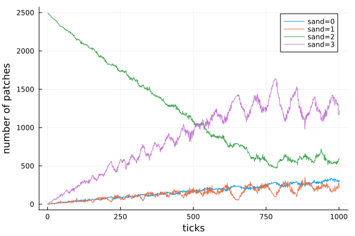

Abelian Sandpile
using EasyABMStep 1: Create Model
In this model, we work with patches only. We set grid_size to (50,50), set space_type to NPeriodic and define an additional model parameter threshold whose value is set to 4.
model = create_2d_model(size = (50,50), space_type=NPeriodic, threshold = 4)Step 2: Initialise the model
Initially, we set the amount of sand on all patches equal to 2 except for the patch (25,25) where we set the sand amount to value 2000. The color attribute of patches is set according to the amount of sand they carry. If the sand amound on a patch is >=4 then its color is blue, otherwise the color is set according to dictionary coldict.
const coldict = Dict(0=>cl"white", 1=>cl"yellow", 2=>cl"green", 3=> cl"orange", 4=>cl"red")
function initialiser!(model)
for j in 1:model.size[2]
for i in 1:model.size[1]
model.patches[i,j].sand = 2
model.patches[i,j].color= coldict[2]
end
end
model.patches[25,25].sand = 2000
model.patches[25,25].color= cl"blue"
end
init_model!(model, initialiser = initialiser!, props_to_record = Dict("patches" => Set([:color,:sand])))Step 3: Defining the step_rule! and running the model
In the step function we loop over all the patches and if a patch has sand >= 4, we topple that patch which means that i) We reduce the amount of sand on that patch by 4 ii) We increase the amount of sand on its Von Neumann neighboring patches by 1.
function topple!(patch_loc, model, threshold)
nbr_patch_locs = neighbor_patches_neumann(patch_loc, model, 1)
for p in nbr_patch_locs
pth_patch = model.patches[p...]
sand = pth_patch.sand + 1
pth_patch.sand = sand
pth_patch.color = sand <= 4 ? coldict[sand] : cl"blue"
end
patch = model.patches[patch_loc...]
sand = patch.sand-threshold
patch.sand = sand
patch.color = sand <= 4 ? coldict[sand] : cl"blue"
end
function step_rule!(model)
threshold = model.parameters.threshold
for j in 1:model.size[2]
for i in 1:model.size[1]
if model.patches[i,j].sand>=threshold
topple!((i,j),model, threshold)
end
end
end
end
run_model!(model, steps = 1000, step_rule = step_rule!)Step 4: Visualisation
In order to draw the model at a specific frame, say 4th, one can use draw_frame(model, frame = 4 ). If one wants to see the animation of the model run, it can be done as
animate_sim(model)
After defining the step_rule! function we can also choose to create an interactive application (which currently works in Jupyter with WebIO installation) as
create_interactive_app(model, initialiser= initialiser!,
props_to_record = Dict("patches" => Set([:color])),
model_controls = [(:threshold, "slider", 1:10)],
step_rule= step_rule!,frames=500, show_patches=true) 
Step 5: Fetch Data
It is easy to fetch any recorded data after running the model. For example, the numbers of patches with different amounts of sand at all timesteps can be got as follows
df = get_nums_patches(model,
patch-> patch.sand == 0,
patch-> patch.sand == 1,
patch-> patch.sand == 2,
patch-> patch.sand == 3,
labels=["sand=0","sand=1","sand=2","sand=3"], plot_result=true)
References
1.) https://en.wikipedia.org/wiki/Abeliansandpilemodel